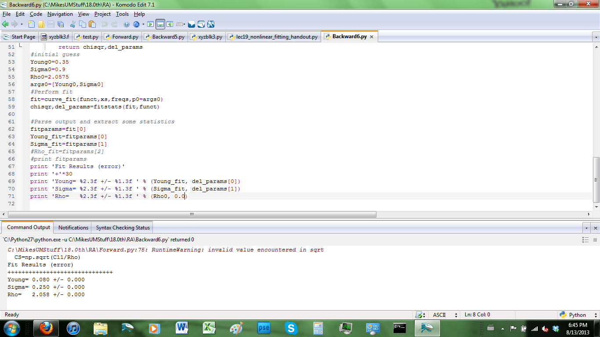

This project involved determining the properties, such as bulk modulus and Young's modulus, of a certain material based on its resonant frequencies. Every material has certain frequencies at which its atoms or molecules will resonate, determined by the distance and the bonds between those atoms or molecules. By applying ultrasound waves at a range of frequencies and observing where the material resonates, it is possible to deduce the properties of the material. Pictured is some example python code showing the results for a particular material. This project relied on python and fortran, but most of the code is proprietary and cannot be shown here.
